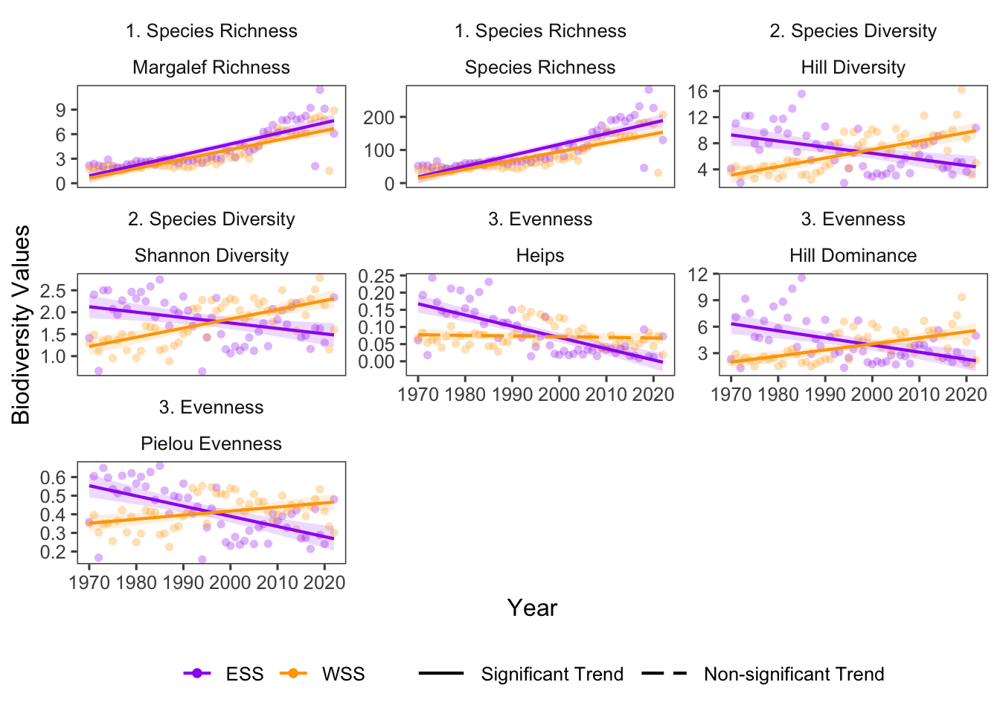

25 Biodiversity Variables
Data Type: Tabular Data (within eco_indicators)
Spatial Scope: Maritimes
Duration 1970-2022
Source: Bundy et al. 2017
25.1 Introduction to Indicator
The eco_indicators dataset provides several metrics of biodiversity from trawl surveys in the Canadian Atlantic.
- Species Richness: Number of species recorded in a given year and sampling area.
- Shannon Diversity: Entropy-based measure of diversity that accounts for both species richness and the relative abundances of species in a given year and sampling area.
- Margalef’s Species Richness: A richness index that standardizes species count by sample size.
- Pielou Evenness: Measure of how evenly individuals are distributed among species.
- Hill Diversity (N1): Exponential of the Shannon-Weiner index; effective number of species in a sample, accounting for both species richness and evenness.
- Hill Dominance (N2): Reciprocal of Simpson’s index; effective indication of the number of common species in a sample.
- Heips Evenness Index: Evenness metric derived from Shannon diversity that scales between 0 and 1 and expresses how close a community is to having equal abundances across species.
25.2 View Data
library(tidyr)
library(plotly)
library(stringr)
plotly_df <- data@data %>% inner_join(global_cols3)
# function to create plot with dropdown menu ------------------------------
make_biomass_dropdown_plot <- function(df,
year_col = "year",
region_col = "region",
value_suffix = "_value") {
# convert to long format
long <- df %>%
janitor::clean_names() %>%
pivot_longer(
cols = ends_with(value_suffix),
names_to = "metric",
values_to = "value"
) %>%
# remove suffix
mutate(
metric = str_remove(metric, "_value")
) %>%
# drop NAs (some regions don't have data for some variables or years)
tidyr::drop_na(value)
# find all metrics and regions
metrics <- unique(long$metric)
regions <- unique(long[[region_col]])
# assign regions to consistent colors
# region_colors <- setNames(hcl.colors(length(regions), palette = "Dark 3"), regions)
# clean names for dropdown panels, helper
pretty_label <- function(x) str_to_title(gsub("_", " ", x)) %>% gsub("Lb","L B",.) %>% gsub("Mb","M B",.)
# build plot -----------------
p <- plot_ly()
# Add bar traces: metric1 has region1..K, metric2 has region1..K, ...
for (metric_i in seq_along(metrics)) {
m <- metrics[metric_i]
for (region_i in regions) {
dat <- long %>%
filter(metric == m, .data[[region_col]] == region_i) %>%
group_by(.data[[year_col]],color, linetype, linewidth, region_group, region_group_label) %>% # in case you have multiple rows per year
summarise(value = sum(value), .groups = "drop") %>%
arrange(.data[[year_col]])
group_name <- unique(dat$region_group)
color <- unique(dat$color)
linetype <- unique(dat$linetype)
width <- unique(dat$linewidth)
# If a region truly has no data for that metric, add an empty trace
# (keeps trace indexing stable)
if (nrow(dat) == 0) {
dat <- tibble::tibble(!!year_col := integer(0), value = numeric(0))
}
p <- p %>% add_lines(
data = dat,
x = ~.data[[year_col]],
y = ~value,
name = as.character(region_i),
legendgroup = group_name,
legendgrouptitle = list(
text =
ifelse(region_i == "4VN" & group_name == "ESS",
"Eastern Scotian Shelf Zones",
ifelse(region_i == "4X",
"Western Scotian Shelf Zones",
NA))),
showlegend = (metric_i == 1),
visible = (metric_i == 1),
line = list(color = color, dash = linetype),
hovertemplate = paste0("<b>", region_i,":</b> ","%{y:.3f}<extra></extra>") )
}
}
n_regions <- length(regions)
n_traces <- length(metrics) * n_regions
buttons <- lapply(seq_along(metrics), function(metric_i) {
vis <- rep(FALSE, n_traces)
shl <- rep(FALSE, n_traces)
idx_start <- (metric_i - 1) * n_regions + 1
idx_end <- metric_i * n_regions
vis[idx_start:idx_end] <- TRUE
shl[idx_start:idx_end] <- TRUE
list(
method = "update",
args = list(
list(visible = vis, showlegend = shl),
list(
title = pretty_label(metrics[metric_i]),
yaxis = list(title = pretty_label(metrics[metric_i]))
)
),
label = pretty_label(metrics[metric_i])
)
})
p %>%
layout(
barmode = "stack",
hovermode = "x unified",
title = pretty_label(metrics[1]),
xaxis = list(title = str_to_title(year_col)), # keep one bar per year
yaxis = list(title = metrics[1], fixedrange = TRUE),
legend = list(
title = list(text = str_to_title(region_col)),
x = 1.02, xanchor = "left",
y = 1, yanchor = "top",
groupclick = "toggleitem"
),
updatemenus = list(list(
type = "dropdown",
x = -.1, xanchor = "left",
y = 1.15, yanchor = "top",
buttons = buttons
)),
margin = list(r = 180, t = 80)
)
}
# usage:
p <- make_biomass_dropdown_plot(plotly_df)
p <- p %>% config(displayModeBar= F)
# use html to pause scrolling on main page while scrolling in dropdown tab
p %>% htmlwidgets::onRender("
function(el, x) {
const gd = el.querySelector('.js-plotly-plot, .plotly');
if (!gd) return;
function hasPlotlyMenuAncestor(node) {
const menuClasses = new Set([
'updatemenu', 'updatemenus', 'updatemenu-container',
'dropdown', 'dropdown-container',
'scrollbar', 'scrollbar-container'
]);
while (node && node !== gd && node !== document) {
if (node.classList) {
for (const c of node.classList) {
if (menuClasses.has(c)) return true;
}
}
node = node.parentNode;
}
return false;
}
function wheelHandler(e) {
if (!gd.contains(e.target)) return;
if (hasPlotlyMenuAncestor(e.target)) {
// IMPORTANT:
e.preventDefault();
}
}
document.addEventListener('wheel', wheelHandler, { capture: true, passive: false });
document.addEventListener('touchmove', function(e) {
if (!gd.contains(e.target)) return;
if (hasPlotlyMenuAncestor(e.target)) e.preventDefault();
}, { capture: true, passive: false });
}
")Figure 25.1: Biodiversity Indicators in all NAFO regions and Scotian Shelf regions overall. Use dropdown menu to select indicator, and click legend to isolate regions.
25.3 Trends
Biodiversity variables show considerable variation between management areas (ESS, WSS) and NAFO zones (4V, 4W, 4X), sometimes with non-linear patterns across the sampling span (Fig. 25.1).
Although not all variables can be simply interpreted by directional trends, biodiversity trends in the Eastern Scotian Shelf are generally decreasing and biodiversity trends in the Western Scotian Shelf are generally increasing. Across the sampling span, the Eastern Scotian Shelf experienced increases in 2 variables (2 significant), and decreases in 5 variables (5 significant). The Western Scotian Shelf experienced increases in 6 variables (6 significant), and decreases in 1 variables (0 significant) (Fig. 25.2).

Figure 25.2: Biodiversity Variable trends for ESS and WSS
25.3.1 Summary Table by NAFO Region and Biodiversity Variable
Trends of each Biodiversity variable for each NAFO region within the Eastern and Western Scotian Shelf are shown below (Table 25.1).
| variable | Eastern Scotian Shelf biodiversity Trends | Western Scotian Shelf biodiversity Trends |
|---|---|---|
| Heips |
4VN: -1.90e-03 ∗ 4VS: -2.86e-03 ∗ 4W: -3.87e-03 ∗ |
4X: -1.89e-04 |
| Hill Diversity |
4VN: 1.17e-01 ∗ 4VS: -6.68e-02 ∗ 4W: -7.01e-02 ∗ |
4X: 1.31e-01 ∗ |
| Hill Dominance |
4VN: 5.27e-02 ∗ 4VS: -4.47e-02 ∗ 4W: -7.24e-02 ∗ |
4X: 6.86e-02 ∗ |
| Margalef Richness |
4VN: 9.34e-02 ∗ 4VS: 8.94e-02 ∗ 4W: 9.60e-02 ∗ |
4X: 1.16e-01 ∗ |
| Pielou Evenness |
4VN: 1.43e-04 4VS: -6.00e-03 ∗ 4W: -5.15e-03 ∗ |
4X: 2.18e-03 ∗ |
| Shannon Diversity |
4VN: 1.72e-02 ∗ 4VS: -1.51e-02 ∗ 4W: -9.26e-03 ∗ |
4X: 2.09e-02 ∗ |
| Species Richness |
4VN: 2.10e+00 ∗ 4VS: 2.27e+00 ∗ 4W: 2.33e+00 ∗ |
4X: 2.67e+00 ∗ |
25.5 Additional Data
Biodiversity Variables (within eco_indicators) contains data for 4VN, 4VS, 4W, 4X, ESS, and WSS. All are shown on this page, but note that NAFO zones are nested within Scotian Shelf regions.
25.6 Variable Definitions
| variable | description | unit |
|---|---|---|
| year | Year of data collection | |
| region | Region over which observations are summarized | |
| SpeciesRichness_ALL_value | Species richness in samples | Number of species |
| ShannonDiversity_ALL_value | Shannon Diversity | Dimensionless |
| MargalefRichness_ALL_value | Margalef Richness Index | Dimensionless |
| PielouEvenness_ALL_value | Pielou Evenness Index | Dimensionless |
| HillDiversity_ALL_value | Hill Diversity (N1) | Effective number of species |
| HillDominance_ALL_value | Hill Dominance (N2) | Effective number of dominant/very abundant species |
| Heips_ALL_value | Heips evenness index | Dimensionless |